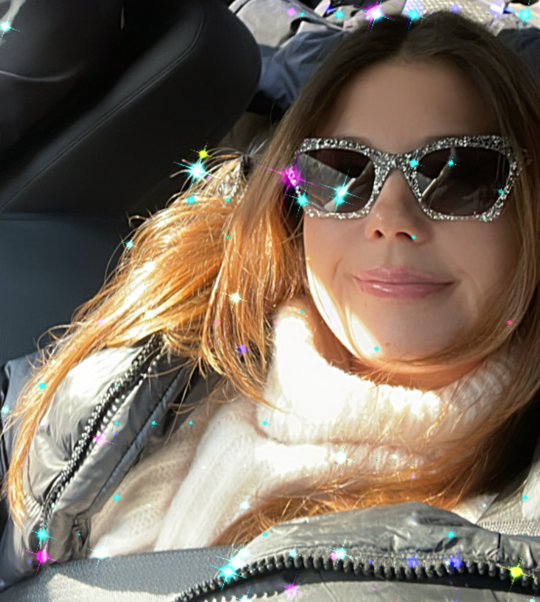
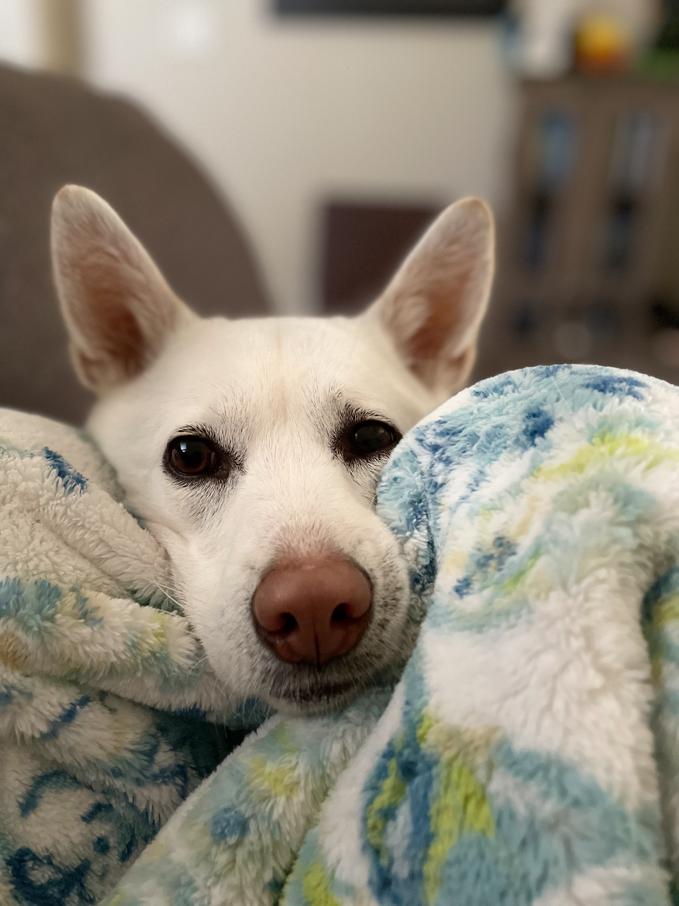
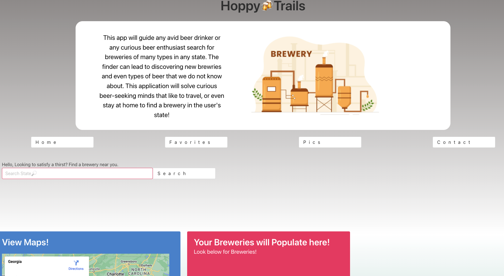
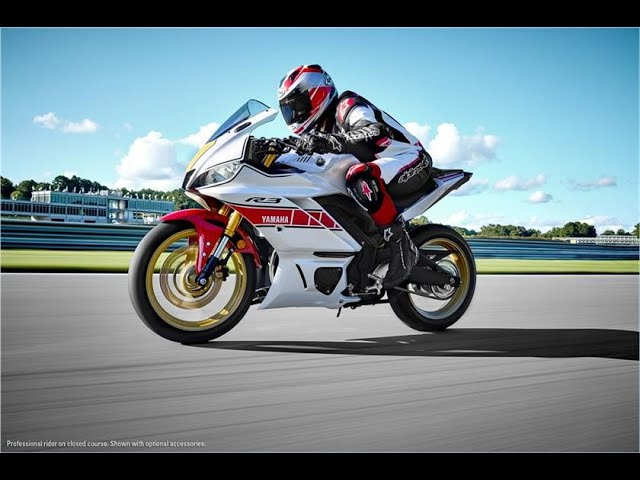

About Me

My GitHub name is 'alc0ve' so I figured it was PUNintentional to turn this portfolio into my little corner. Right now, it is my "petit" alcove, but I hope one day it would be my "très magnifique" alcove!
Some things about me... I would love to travel more. Especially to France! My dog is my child. She is spoiled and is not afraid to show it. I am fluent in Korean, and I'd also love to go back to Korea. I am a radiation therapist working as a diagnostic x-ray tech. I am the person that makes sure someone's dialysis access sites are working properly, so that when they are on dialysis, it runs smoothly. I ride motorcycles! I have a Yamaha R3, the 60th anniversary GP edition. I used to have a beautiful blue Kawasaki Z400, but wrecked it in the mountains in May.
Work Apps
App 1
My dog, Ahsoka. She is a Korean Jindo. Boop the snoot to learn about Korean Jindo Dogs!
Hoppy Trails! (Project 1)
First project working with others from my bootcamp course. We created a brewery finder app with google maps! Click screenshot to see live page!
App 3

My favorite death metal band: Slaughter to Prevail. Here they are with "kid of darkness" masks. Click the pic to learn or listen!🤘
App 4
Some cool stuff here...like my current motorcycle! Click on the bike to see specs!😎
App 5
I love to read. My favorite fantasy series is Sarah J. Maas's A Court of Thorns and Roses. Click the meme to learn more!📚